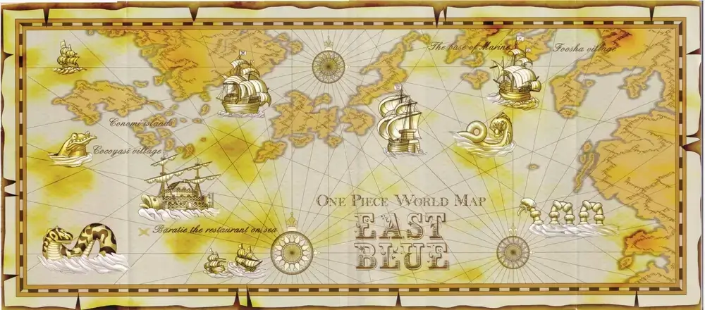

Cartografía

El mapa es una representación del planeta de One Piece, con las siguientes zonas significativas:
Red Line o Línea Roja: Se trata del único continente del mundo, una línea montañosa que envuelve todo el planeta.
Grand Line o Gran Línea: Se trata de un mar que recorre el ecuador del mundo de One Piece, un lugar donde ocurren cosas extraordinarias.
Los cuatro océanos que dividen el mundo la Red Line y la Grand Line:
- East Blue o Mar del Este.
- North Blue o Mar del Norte.
- West Blue o Mar del Oeste.
- South Blue o Mar del Sur.
East Blue - Mar del Este
El East Blue es el océano que conforma la parte este del Mar Azul, dividido por la Red Line y el Grand Line. Está separado del North Blue por la Línea Roja y del South Blue por la mitad Paradise de la Grand Line. El East Blue es conocido comúnmente como el mar más débil de todos. Los piratas considerados grandes y amenazantes en este mar son considerados de baja categoría en comparación con los piratas de otros mares, especialmente en el Grand Line. Irónicamente, a pesar de su escasa fama, el East Blue fue la cuna del pirata más famoso y poderoso de todos los tiempos, el difunto Rey Pirata Gol D. Roger. También se le conoce como el Mar de las Conspiraciones.
Islas pertenecientes al Mar del Este
- Isla Dawn: La isla en la que nació y creció Monkey D. Luffy
- Isla Goat
- Región insular de Yotsuba
- Pueblo Shimotsuki: donde entrenó Roronoa Zoro
- Islas Órgano
- Isla de Animales Raros
- Islas Gecko: Se encuentra
Syrup Village , ciudad natal de Usopp - Baratie: Un famoso barco restaurante en el mar. Sanji se crió acá
- Islas Conomi: Se encuentra la aldea Cocoyase, pueblo natal de Nami
- Reino de Oykot: Donde la madre adoptiva de Nami la encontró
- 77th Branch: Base de marines
- 16th Branch: Base de marines
- Loguetown: Una popular ciudad comercial. Fue el lugar donde nació y fue ejecutado Gol D. Roger
- Isla Bola de Espejos
- Tequila Wolf: Una ciudad donde se construía un puente con esclavos hacía más de 700 años
- Cozia
- Sixis
- Reino Frauce